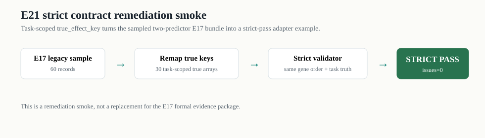

E21 strict contract remediation smoke
E21 把 E20 暴露出的 true_effect_key 问题变成一个可验证修法：同一任务下不同预测器共享 task-scoped true effect，抽样包 strict pass。

Summary
| source_bundle | source_records | sample_records | sample_task_groups | sample_predictors | sample_splits | strict_status | strict_issue_count | strict_issues | max_true_effect_diff_within_task | n_predicted_arrays | n_true_arrays | n_control_arrays |
|---|---|---|---|---|---|---|---|---|---|---|---|---|
| runtime/e17_sciplex3_full743_gene5000_20260707 | 22290 | 60 | 30 | ContextSimBaseline,V0StrongBaseline | test,train,val | pass | 0 | 0.0 | 60 | 30 | 30 |
Key remap sample
| old_record_id | new_record_id | predictor_name | task_key | split | old_predicted_effect_key | new_predicted_effect_key | old_true_effect_key | new_true_effect_key |
|---|---|---|---|---|---|---|---|---|
| v2_rec_004012 | e21_rec_00000 | ContextSimBaseline | sciplex3_official_3cell::task_00000 | test | v2_rec_004012::predicted_effect | e21_rec_00000::predicted_effect | v2_rec_004012::true_effect | sciplex3_official_3cell::fold0::test::sciplex3_official_3cell__task_00000::true_effect |
| v2_rec_001783 | e21_rec_00001 | V0StrongBaseline | sciplex3_official_3cell::task_00000 | test | v2_rec_001783::predicted_effect | e21_rec_00001::predicted_effect | v2_rec_001783::true_effect | sciplex3_official_3cell::fold0::test::sciplex3_official_3cell__task_00000::true_effect |
| v2_rec_004013 | e21_rec_00002 | ContextSimBaseline | sciplex3_official_3cell::task_00001 | test | v2_rec_004013::predicted_effect | e21_rec_00002::predicted_effect | v2_rec_004013::true_effect | sciplex3_official_3cell::fold0::test::sciplex3_official_3cell__task_00001::true_effect |
| v2_rec_001784 | e21_rec_00003 | V0StrongBaseline | sciplex3_official_3cell::task_00001 | test | v2_rec_001784::predicted_effect | e21_rec_00003::predicted_effect | v2_rec_001784::true_effect | sciplex3_official_3cell::fold0::test::sciplex3_official_3cell__task_00001::true_effect |
| v2_rec_004014 | e21_rec_00004 | ContextSimBaseline | sciplex3_official_3cell::task_00006 | test | v2_rec_004014::predicted_effect | e21_rec_00004::predicted_effect | v2_rec_004014::true_effect | sciplex3_official_3cell::fold0::test::sciplex3_official_3cell__task_00006::true_effect |
| v2_rec_001785 | e21_rec_00005 | V0StrongBaseline | sciplex3_official_3cell::task_00006 | test | v2_rec_001785::predicted_effect | e21_rec_00005::predicted_effect | v2_rec_001785::true_effect | sciplex3_official_3cell::fold0::test::sciplex3_official_3cell__task_00006::true_effect |
| v2_rec_004015 | e21_rec_00006 | ContextSimBaseline | sciplex3_official_3cell::task_00010 | test | v2_rec_004015::predicted_effect | e21_rec_00006::predicted_effect | v2_rec_004015::true_effect | sciplex3_official_3cell::fold0::test::sciplex3_official_3cell__task_00010::true_effect |
| v2_rec_001786 | e21_rec_00007 | V0StrongBaseline | sciplex3_official_3cell::task_00010 | test | v2_rec_001786::predicted_effect | e21_rec_00007::predicted_effect | v2_rec_001786::true_effect | sciplex3_official_3cell::fold0::test::sciplex3_official_3cell__task_00010::true_effect |
| v2_rec_004016 | e21_rec_00008 | ContextSimBaseline | sciplex3_official_3cell::task_00012 | test | v2_rec_004016::predicted_effect | e21_rec_00008::predicted_effect | v2_rec_004016::true_effect | sciplex3_official_3cell::fold0::test::sciplex3_official_3cell__task_00012::true_effect |
| v2_rec_001787 | e21_rec_00009 | V0StrongBaseline | sciplex3_official_3cell::task_00012 | test | v2_rec_001787::predicted_effect | e21_rec_00009::predicted_effect | v2_rec_001787::true_effect | sciplex3_official_3cell::fold0::test::sciplex3_official_3cell__task_00012::true_effect |
| v2_rec_004017 | e21_rec_00010 | ContextSimBaseline | sciplex3_official_3cell::task_00016 | test | v2_rec_004017::predicted_effect | e21_rec_00010::predicted_effect | v2_rec_004017::true_effect | sciplex3_official_3cell::fold0::test::sciplex3_official_3cell__task_00016::true_effect |
| v2_rec_001788 | e21_rec_00011 | V0StrongBaseline | sciplex3_official_3cell::task_00016 | test | v2_rec_001788::predicted_effect | e21_rec_00011::predicted_effect | v2_rec_001788::true_effect | sciplex3_official_3cell::fold0::test::sciplex3_official_3cell__task_00016::true_effect |
| v2_rec_004018 | e21_rec_00012 | ContextSimBaseline | sciplex3_official_3cell::task_00020 | test | v2_rec_004018::predicted_effect | e21_rec_00012::predicted_effect | v2_rec_004018::true_effect | sciplex3_official_3cell::fold0::test::sciplex3_official_3cell__task_00020::true_effect |
| v2_rec_001789 | e21_rec_00013 | V0StrongBaseline | sciplex3_official_3cell::task_00020 | test | v2_rec_001789::predicted_effect | e21_rec_00013::predicted_effect | v2_rec_001789::true_effect | sciplex3_official_3cell::fold0::test::sciplex3_official_3cell__task_00020::true_effect |
| v2_rec_004019 | e21_rec_00014 | ContextSimBaseline | sciplex3_official_3cell::task_00029 | test | v2_rec_004019::predicted_effect | e21_rec_00014::predicted_effect | v2_rec_004019::true_effect | sciplex3_official_3cell::fold0::test::sciplex3_official_3cell__task_00029::true_effect |
| v2_rec_001790 | e21_rec_00015 | V0StrongBaseline | sciplex3_official_3cell::task_00029 | test | v2_rec_001790::predicted_effect | e21_rec_00015::predicted_effect | v2_rec_001790::true_effect | sciplex3_official_3cell::fold0::test::sciplex3_official_3cell__task_00029::true_effect |
| v2_rec_004020 | e21_rec_00016 | ContextSimBaseline | sciplex3_official_3cell::task_00033 | test | v2_rec_004020::predicted_effect | e21_rec_00016::predicted_effect | v2_rec_004020::true_effect | sciplex3_official_3cell::fold0::test::sciplex3_official_3cell__task_00033::true_effect |
| v2_rec_001791 | e21_rec_00017 | V0StrongBaseline | sciplex3_official_3cell::task_00033 | test | v2_rec_001791::predicted_effect | e21_rec_00017::predicted_effect | v2_rec_001791::true_effect | sciplex3_official_3cell::fold0::test::sciplex3_official_3cell__task_00033::true_effect |
| v2_rec_004021 | e21_rec_00018 | ContextSimBaseline | sciplex3_official_3cell::task_00034 | test | v2_rec_004021::predicted_effect | e21_rec_00018::predicted_effect | v2_rec_004021::true_effect | sciplex3_official_3cell::fold0::test::sciplex3_official_3cell__task_00034::true_effect |
| v2_rec_001792 | e21_rec_00019 | V0StrongBaseline | sciplex3_official_3cell::task_00034 | test | v2_rec_001792::predicted_effect | e21_rec_00019::predicted_effect | v2_rec_001792::true_effect | sciplex3_official_3cell::fold0::test::sciplex3_official_3cell__task_00034::true_effect |
| v2_rec_002229 | e21_rec_00020 | ContextSimBaseline | sciplex3_official_3cell::task_00002 | train | v2_rec_002229::predicted_effect | e21_rec_00020::predicted_effect | v2_rec_002229::true_effect | sciplex3_official_3cell::fold0::train::sciplex3_official_3cell__task_00002::true_effect |
| v2_rec_000000 | e21_rec_00021 | V0StrongBaseline | sciplex3_official_3cell::task_00002 | train | v2_rec_000000::predicted_effect | e21_rec_00021::predicted_effect | v2_rec_000000::true_effect | sciplex3_official_3cell::fold0::train::sciplex3_official_3cell__task_00002::true_effect |
| v2_rec_002230 | e21_rec_00022 | ContextSimBaseline | sciplex3_official_3cell::task_00003 | train | v2_rec_002230::predicted_effect | e21_rec_00022::predicted_effect | v2_rec_002230::true_effect | sciplex3_official_3cell::fold0::train::sciplex3_official_3cell__task_00003::true_effect |
| v2_rec_000001 | e21_rec_00023 | V0StrongBaseline | sciplex3_official_3cell::task_00003 | train | v2_rec_000001::predicted_effect | e21_rec_00023::predicted_effect | v2_rec_000001::true_effect | sciplex3_official_3cell::fold0::train::sciplex3_official_3cell__task_00003::true_effect |
| v2_rec_002231 | e21_rec_00024 | ContextSimBaseline | sciplex3_official_3cell::task_00004 | train | v2_rec_002231::predicted_effect | e21_rec_00024::predicted_effect | v2_rec_002231::true_effect | sciplex3_official_3cell::fold0::train::sciplex3_official_3cell__task_00004::true_effect |
| v2_rec_000002 | e21_rec_00025 | V0StrongBaseline | sciplex3_official_3cell::task_00004 | train | v2_rec_000002::predicted_effect | e21_rec_00025::predicted_effect | v2_rec_000002::true_effect | sciplex3_official_3cell::fold0::train::sciplex3_official_3cell__task_00004::true_effect |
| v2_rec_002232 | e21_rec_00026 | ContextSimBaseline | sciplex3_official_3cell::task_00005 | train | v2_rec_002232::predicted_effect | e21_rec_00026::predicted_effect | v2_rec_002232::true_effect | sciplex3_official_3cell::fold0::train::sciplex3_official_3cell__task_00005::true_effect |
| v2_rec_000003 | e21_rec_00027 | V0StrongBaseline | sciplex3_official_3cell::task_00005 | train | v2_rec_000003::predicted_effect | e21_rec_00027::predicted_effect | v2_rec_000003::true_effect | sciplex3_official_3cell::fold0::train::sciplex3_official_3cell__task_00005::true_effect |
| v2_rec_002233 | e21_rec_00028 | ContextSimBaseline | sciplex3_official_3cell::task_00007 | train | v2_rec_002233::predicted_effect | e21_rec_00028::predicted_effect | v2_rec_002233::true_effect | sciplex3_official_3cell::fold0::train::sciplex3_official_3cell__task_00007::true_effect |
| v2_rec_000004 | e21_rec_00029 | V0StrongBaseline | sciplex3_official_3cell::task_00007 | train | v2_rec_000004::predicted_effect | e21_rec_00029::predicted_effect | v2_rec_000004::true_effect | sciplex3_official_3cell::fold0::train::sciplex3_official_3cell__task_00007::true_effect |
Output bundle
小型 strict bundle 位于 input/PREDICTION_RECORDS.csv、input/predicted_effects.npz、input/true_effects.npz。